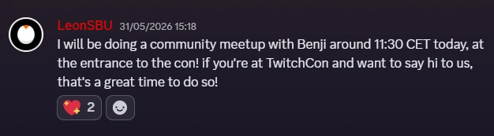

as if i wasn't annoying enough about this, i made an entirely new subpage dedicated to THIS!!! MOMENT!!!!! becauz spamming on Twitter Dot Com jus doesnt give any1 the full story ab this [and ill also in the risk of being flagged AGAIN]. anyways this page is relly just an archive for me to look back on LMFAAOOOO but i still want Every person on the internet to know. so . yeah. haha.

on 31/03/2026, the last day of TwitchCon, Leon announced that he was going to hold a meetup at 12:30 my time
I love fruitcake I love shortbread apple pie dessert cupcake I love macaroon. Pastry apple pie jelly-o dessert tiramisu jelly-o. Pastry ice cream I love ice cream gummies pastry.